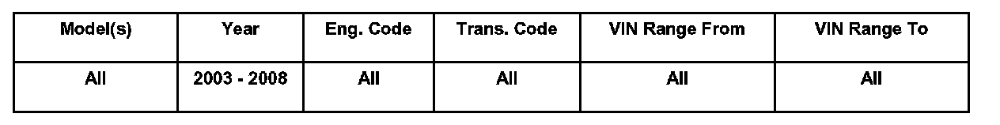

Instruments - Trip Computer Fuel Mileage Information
90 07 02Mar. 23, 2007
2005497
Supersedes T.B. Group 90 number 03-01 dated April 4, 2003 due to the additional models, model years and inclusion into ElsaWeb.

Affected Vehicles
Condition
Multi-function Trip Computer, Accuracy Concerns with Average Trip Fuel Consumption Calculation
Customer is concerned with the accuracy of the trip computer fuel consumption calculation and its correlation with fuel gauge.
Technical Background
If a Customer voices concerns that the trip computer does not correlate with the fuel gauge:
- Explain to the Customer, the reasons for the margin of error as listed in this technical bulletin.
No repair is necessary.
Production Solution
No production change required.
Service
The trip computer approximates the fuel consumption and the distance until empty based on a wide variety of driving conditions.
Miles to empty is calculated using, average fuel consumption and comparing this figure with the current consumption and amount of fuel remaining in tank.
This computation is affected by climate conditions, terrain, distance driven, speed driven, change of speed, Air Conditioner usage. Therefore a safety margin of 6 to 20 miles has been built in to the system.
The trip computer is designed to error on the side of safety so that the vehicle does not run out of fuel.
This helps in the following ways:
- Helps protect the driver from being stranded
- Helps to ensure that Diagnostic Trouble Codes are not set due to lean fuel mixture condition (related to extreme low fuel level)
- Helps to prevent misfire (related to extreme low fuel level)
- Helps to prevent catalytic converter damage, which may be caused by misfire (related to low fuel level) which could potentially cause the need for expensive repairs.
- Helps ensure that the vehicle continues to operate within Federally mandated emission guidelines.
If a Customer voices concerns that the trip computer does not correlate with the fuel gauge:
- No repair is necessary.
Explain to the Customer, the reasons for the margin of error as listed above.
Warranty
Information only.
Required Parts and Tools
No Special Parts required. Always see ETKA for the latest part(s) information.
No Special Tools required.